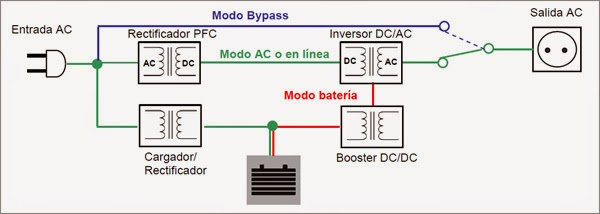
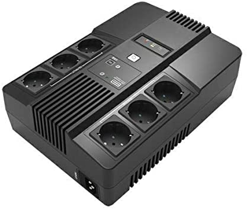
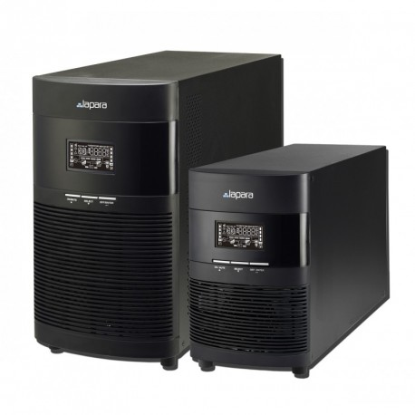
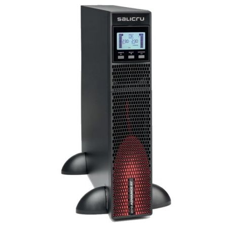

Los sistemas de alimentación ininterrumpida (SAI) o Uninterruptible Power Supply (UPS), son aquellos capaces de proporcionar corriente eléctrica a partir de un acumulador (baterías) o de otra forma de energía (mecánica o de combustión).
La forma más sencilla de SAI es la de un dispositivo que se alimenta de corriente eléctrica incorporando un acumulador, que es el encargado de suministrar la energía cuando falla el flujo de la red eléctrica. De esta forma, durante un tiempo limitado, se permite realizar un apagado seguro del equipamiento antes del corte de suministro eléctrico.
Los distintos dispositivos hardware no irán enchufados a las tomas de corriente directamente, se enchufarán al SAI que será el que estará conectado a las tomas de corriente, haciendo de este modo de intermediario entre la red eléctrica y los dispositivos hardware.
Las partes más importantes de las que consta un SAI son:
- Rectificador: Convierte la corriente alterna en tensión continua para cargar la batería.
- Baterías: Almacenan la energía que se utiliza para seguir alimentando los dispositivos cuando hay un corte de flujo eléctrico.
- Convertidor: Convierte la tensión continua de la batería en tensión alterna.
En la imagen se puede ver una representación esquemática de las partes de un SAI. En condiciones de flujo eléctrico normal el ordenador se alimenta a través del circuito de color verde. Si ocurriese un fallo de alimentación, entraría en funcionamiento el circuito rojo que obtiene la energía de la batería.
Los SAI se pueden clasificar en:
- OFF-LINE o STAND BY.
- ON-LINE.
- INLINE, SAI INTERACTIVO o de LINEA INTERACTIVA.
OFFLINE o STAND BY
El SAI de tipo OFFLINE es el más extendido y económico. Tiene como función proteger a equipos domésticos como los PC.
Cuando el flujo de corriente eléctrica falla, los SAI entran en funcionamiento, el intervalo de tiempo que transcurre en ausencia de corriente eléctrica es apreciable. Son equipos que debido a su bajo coste no proporcionan un flujo de corriente de gran calidad. No protegen totalmente a la carga de las perturbaciones en la red normal, puesto que no la aíslan.
ONLINE o de DOBLE CONVERSIÓN
El SAI ONLINE se caracteriza porque a diferencia del OFFLINE, se intercala entre el suministro de red normal y la carga que se quiere alimentar. Se utilizan en el entorno industrial más que a nivel usuario.
Proporcionan una salida de corriente alterna independiente de la red normal, esta corriente se genera a partir de la corriente continua almacenada en las baterías. Además proporcionan aislamiento entre la carga y la red normal, protegiendo a la carga frente a cualquier anomalía del flujo en la corriente eléctrica.
{kind=link}
INLINE, SAI INTERACTIVO o de LINEA INTERACTIVA.
Una solución intermedia entre los dos anteriores la constituyen los SAI de tipo INTERACTIVO. Estos dispositivos se intercalan entre la red y la carga a la que protegen.
No aíslan completamente de la red normal, aunque sí ofrecen una protección frente a fluctuaciones dentro de unos márgenes. El tiempo que transcurre entre el fallo en la red y la entrada en funcionamiento del SAI, del orden de milisegundos, es inapreciable.
Son adecuados para ordenadores, centralitas telefónicas y equipos servidores de pequeñas y medianas empresas (Pymes).
{kind=link}